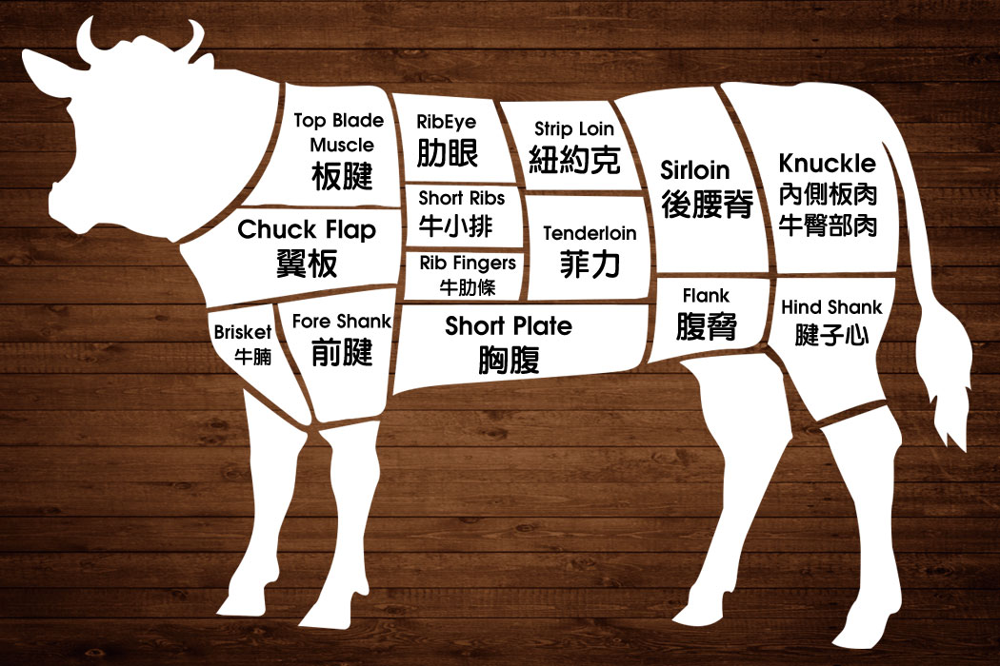

Beef Cuts Diagram

嫩度高的部位（里脊、西冷、肋眼）适合快煎；结缔组织多的部位（牛腩、牛腱、短肋）适合长时间炖煮。
Grading Systems
美国 USDA 等级（超市最常见）
| 等级 | 花纹 | 在哪买 | 备注 |
|---|---|---|---|
| Prime ⭐⭐⭐ | 丰富 | Costco、高端超市、餐厅 | 全美约 5% 的牛能达到，直接厚煎最好 |
| Choice ⭐⭐ | 中等 | 普通超市主力 | 选上段 Choice（Upper 1/3）性价比最高 |
| Select | 少 | 平价超市 | 适合炖煮、腌制后再烤，直接煎偏柴 |
日本和牛等级（BMS 大理石花纹评分）
双轴评分：产量等级 A/B/C（A = 出肉率最高）× 肉质等级 1–5（综合花纹、色泽、纹理、脂肪色）。"A5"= 产量 A + 肉质 5，最高规格。
| BMS 分数 | 肉质等级 | 特征 |
|---|---|---|
| BMS 8–12 | 4–5 | 超密集雪花，入口即化，一次吃不了太多 |
| BMS 4–7 | 3–4 | 花纹明显，兼顾香气与口感的平衡点 |
| BMS 1–3 | 1–2 | 接近普通牛，牛肉香气更强，脂肪感少 |
澳洲 MB（Marble Score）：0–9+，专用于澳洲和牛。MB 4–5 ≈ 日本 A3，MB 8–9+ ≈ 日本 A5。普通澳洲安格斯走 MSA 嫩度认证，不用此评分。
💡 横向对照：日本 A5 ≈ 澳洲 MB 8–9。美国 Prime ≈ 日本 BMS 3–4——花纹有但差距明显。追求雪花选日本/澳洲和牛，追求浓郁牛肉香气选美国 Prime 或阿根廷草饲。
知名产地与特点
🇯🇵 日本——四大名牛
| 品牌 | 产地 | 特点 | 在美国能买到？ |
|---|---|---|---|
| 神户牛 Kobe | 兵库县（但马牛品系） | 名气最大，认证最严，脂肪甜而细腻，香气独特。 | 仅少数顶级餐厅；价格极高 |
| 松阪牛 Matsusaka | 三重县 | 只养未生育母牛，脂肪融点极低，号称"牛肉界的极致"。 | 几乎买不到，日本当地限量 |
| 近江牛 Ohmi | 滋贺县 | 三大和牛历史最悠久，风味均衡，花纹稍逊于神户。 | 偶见进口，性价比最高 |
| 鹿儿岛和牛 | 鹿儿岛县 | 产量大，品质稳定，A4/A5 容易买到，出口量最大。 | ✅ 亚超、网购均有 |
🇺🇸 美国——玉米谷饲 Grain-Fed
- 主流品种：黑安格斯 Black Angus（Certified Angus Beef = CAB，Choice 上段或 Prime）。先放牧 6–8 个月，再谷仓玉米饲育 120–200 天，花纹适中、牛肉香气浓。厚切直接煎最能发挥风味。
- Costco Prime 是 Bellevue 地区性价比最高的厚切选择。
- Snake River Farms（爱达荷州）：美式和牛（Wagyu × Angus 杂交），BMS 可达 6–9，是美国和牛天花板，可官网邮购。
🇦🇺 澳洲
- 黑安格斯 Black Angus：草饲或谷饲，风味干净，MSA 认证保障嫩度，口感比美国稍瘦。
- 澳洲和牛 F1/Fullblood：F1 = 50% 和牛血统（MB 3–5）；Fullblood = 100% 和牛（MB 8–9+）。风味接近日本 A5，价格低 30–50%，H Mart、99 Ranch 常有薄片。
- 澳洲草饲牛 omega-3 含量高，肉色深红，脂肪偏黄属正常（来自牧草胡萝卜素）。
🇦🇷 阿根廷 / 🇺🇾 乌拉圭——草饲 Grass-Fed
- 潘帕斯草原天然放牧，几乎不喂谷物，花纹少但牛肉风味极强烈，铁质/矿物感明显。
- 最适合厚切简单撒盐、碳火烤。不适合追求软糯口感的做法。
🇨🇦 加拿大——阿尔伯塔 Alberta
- 分级：Canada Prime / AAA / AA，AAA ≈ 美国 Choice。气候寒冷使牛积脂多，阿尔伯塔谷饲牛花纹常接近 Prime。
Bellevue 周边选购攻略
| 地点 | 适合买 | 备注 |
|---|---|---|
| H Mart (Bellevue) | 涮锅薄片、韩式烤肉切法、澳洲和牛片 | 切法多样，和牛薄片性价比好；有时有 Prime 厚切 |
| Costco (Kirkland / Issaquah) | USDA Prime 厚切、偶尔日本 A5 薄片 | Prime 带骨牛排价格最实惠；A5 不定期上架，见到即囤 |
| 99 Ranch (Bellevue) | 中式切法：牛腩、牛腱、牛骨 | 炖菜部位最齐全；澳洲和牛薄片也稳定有货 |
| Whole Foods (Bellevue) | 草饲与高端部位；有货时可找 Panorama Organic（5★） | 草饲厚切首选；有机品牌详细对比请见 → 有机牛肉选购指南 |
| QFC / Safeway | 日常 Choice 级 | 促销时 Choice 上段很划算，适合家常炖炒 |
💡 H Mart 切法偏日韩（适合烤、涮），99 Ranch 中式分割齐（适合炖）。想买厚切煎牛排首选 Costco Prime；和牛涮锅首选 H Mart 或 99 Ranch 的澳洲 Fullblood 片；想试美国顶级和牛可网购 Snake River Farms。
For choosing between organic brands at Whole Foods, PCC, or QFC, see the Organic Beef Buying Guide →